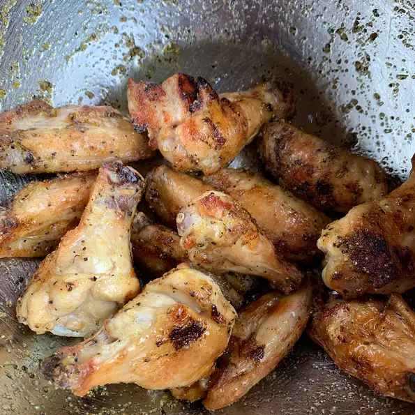

Easy Lemon-Pepper Chicken Wings

Description
My family and I love lemon-pepper wings, especially during football season.
I got tired of spending so much money on them for our party that I decided to whip up my own version of Wingstop's lemon-pepper chicken wings.
The end result was an empty platter and pleased bellies.
Ingredients
- 2 cups oil, or as needed
- 2 tablespoons extra-virgin olive oil
- 1 tablespoon lemon-pepper seasoning
- 12 chicken wings
Directions
- Step 1: Heat oil in a deep-fryer or large saucepan to 375 degrees F (190 degrees C).
- Step 2: Stir olive oil and lemon-pepper together in a bowl.
- Step 3: Fry wings in hot oil until no longer pink at the bone and the juices run clear, about 8 minutes;
an instant-read thermometer inserted near the bone should read 165 degrees F (74 degrees C).
- Step 4: Toss hot wings with lemon-pepper mixture to coat.